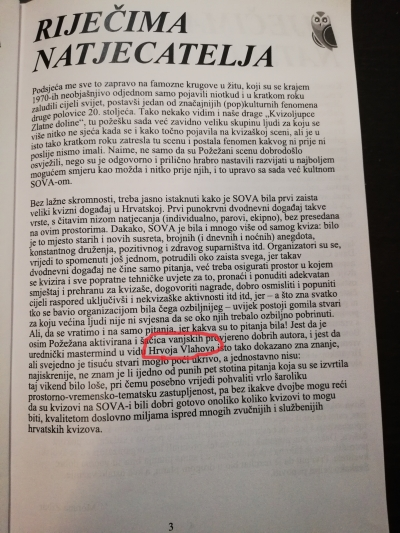
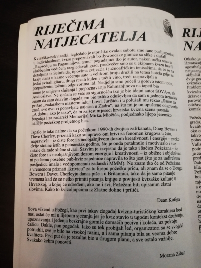
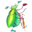

Ja sam Hrvoje, ali enigmati i kvizaši znaju me kao Škrembu (neki kvizaši i kao Rokera s Orljavu), a za šahiste sam Son Of Caissa.
Rođen sam, živim i radim kao srednjoškolski nastavnik u Požegi.
Šahom se bavim od malih nogu, bio sam kadetski prvak Hrvatske do 15 godina, kao igrač imam titulu majstorskog kandidata, a kao trener službeni sam FIDE instruktor.
Enigmatikom sam se zarazio tijekom studiranja, radio sam, najprije kao suradnik, a kasnije niz godina kao enigmatski urednik u riječkom Feniksu. Objavljeno mi je nekoliko tisuća enigmatskih radova, prvenstveno križaljki. Sudjelovao sam kao koautor zadataka na World Puzzle Championship 1997. u Koprivnici. Zadnjih godina s Feniksom surađujem na način da objavljuju moje kvizove.
Kad smo kod kvizova, moj prvi susret s njima datira u doba “stare” Kviskoteke kada se obitelj okupljala pred tv-om ne propuštajući nijednu epizodu, ako je to ikako moguće. Na tv-kvizu prvi puta sam nastupio kao osamnaestogodišnjak u Brojkama i slovima. Sudjelovao sam na mnogim tv kvizovima, a ponegdje se ubola i neka kunica (Kolo sreće 5.000, Najslabija karika 34.000, Potjera 40.000 i Tko želi biti milijunaš 250.000). Obožavam igrati kvizove, pogotovo ekipne, ali zadnjih godina najveća mi je ljubav sastavljanje pitanja, to jest pravljenje kvizova. Tako sam 2015. utemeljio pub kviz scenu svoga grada, često hvaljenu od strane lovaca na Potjeri. Suorganizirao sam prvo veliko kvizaško okupljanje u Hrvatskoj (SOVA – Spring Open Vallis Aurea) na osnovu čije ideje su proizašla slična okupljanja u drugim hrvatskim gradovima - Zadar, Karlovac i Varaždin. A osim činjenice da je trećina pitanja za tu prvu SOVA-u moje djelo, bio sam kvizmaster, to jest urednik svih kvizova na tom natjecanju. Kao autor pub kvizova gostovao sam u Šibeniku, Osijeku, Slavonskom Brodu, Velikoj i Novoj Gradiški. Moja pitanja ste također mogli susresti na više državnih prvenstava.
Posljednjih sam mjeseci aktivan kao autor online kvizova – pojedinačnih na myQuiz platformi i ekipnih na Twitchu. Izuzetno sam ponosan što sam prvi dobitnik “Plakete za poseban doprinos u razvoju kviza u Hrvatskoj” u povijesti Hrvatskog kviz saveza.


© Untitled. All rights reserved. | Photos by Škrembin pub kviz | Design by Roko.